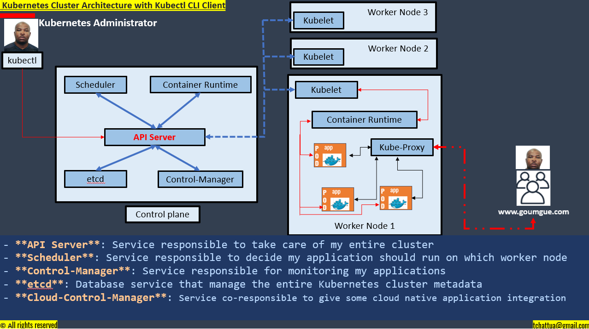

Elastic Kubernetes Cluster (EKS) Cluster on AWS Cloud Platform with Terraform IaC
By clicking on the next image, your browser will redirect you to my bitbucket repository where you will find the Terraform source code

Create IAM User which I'm going to use to create EKS Cluster from Terraform Code
- I'm going to AWS Management Console to create my IAM user
- Navigate to **IAM dashboard**;
- Click on **Users**;
- Click on **Add users** and specify the user details (user name, Provide user access to AWS Management Console, and Password);
- Click on **Next** and **Attach policies directly**
- Let's select **AdministratorAccess** as *Permissions policies*
- Click on **Next**
- Click on **Create user** and return to the users list
- Going back to my IAM user
- I want to create an **access key** and a **secret key** that I'm going to use to programmatically access the AWS
- Go to **Security credentials**
- Under *Access key* click on **Create access key**, select **Command Line Interface (CLI)**, and understand the recommendation
- Click on **Next**;
- Click on **Create access key** and save those Access key and secret access key by downloading the .csv file.
Configure AWSCLI
- Install AWSCLI in my OS
- URL: https://aws.amazon.com/cli/
- Download the package on this portal and install it.
- Run: **aws --version**
- **Configure the access key and the secret key**:
- Open the terminal and run **aws configure** command
- Open the csv file to copy the access and the secret key
- Display all my S3 bucket in CLI (Verify that my aws access is working) by running the cli: aws s3 ls
- Display all my dynamodb by running the cli: aws dynamodb list-tables
Deploy AWS remote backend where will be store the terraform state file and the state lock file by following to my bitbucket documentation
Deploy *a02_eks_cluster_CODE*
- In my a02_eks_cluster_CODE, I'm going to mention the S3 bucket and the Dynamodb as a backend to store my **terraform.tfstate** file
- Going to the high level configuration of my code, I'm going to deploy my EKS cluster with one nodegroup called App.
- This nodegroup is maintaining the autoscaling configuration with the *desired_Size = 5*, the *max_Size = 10* and the *min_Size = 5* worker nodes.
- The rest of configuration as usual in the custom *vpc* and in the custom *subnets*
- deployment of my eks cluster: navigate to the project_folder and run terraform commands:
- $ terraform init
- $ terraform fmt
- $ terraform validate
- $ terraform plan
- $ terraform apply -auto-approve
Connect to the API server using kubectl utility by Downloading and setting up kubectl binary in Linux OS
- $ curl -LO https://dl.k8s.io/release/v1.22.0/bin/linux/amd64/kubectl
- $ chmod +x kubectl
- $ mv kubectl /usr/local/bin/
- $ kubectl version
To use kubectl to connect to my EKS cluster, I need to generate the client side certification which is the kubeconfig file:
- $ aws eks update-kubeconfig --name <> --region <>
- $ aws eks update-kubeconfig --name ed-eks-01 --region us-east-1
- $ kubectl get nodes
- $ kubectl get nodes
Table
| Article | Prix | Info |
|---|
| Chocolate | $2.5 | Bio |
| Beurre | $1.9 | Bio |
| Oeuf | $4 | Bio |
| Fromage | $5 | Bio |